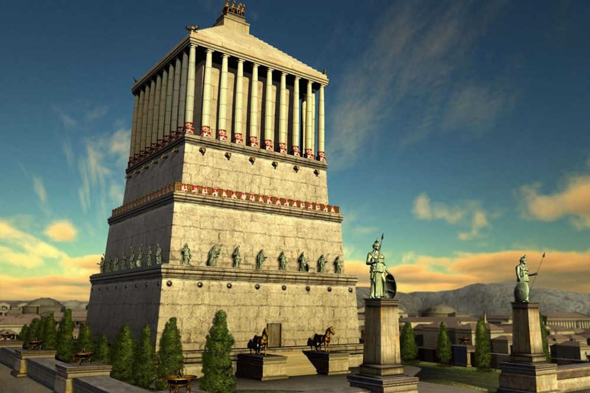

Halikarnas Mozolesi (ya da Mausoleion), Kral Mausolos adına karısı ve kız kardeşi Artemisia(en) tarafından Halikarnassos'ta yaptırılmış, Dünyanın Yedi Harikası'ndan biri sayılan, kolonlarıyla Yunan mimarisini, piramit şeklindeki çatısıyla da Mısır mimarisini andıran oldukça büyük boyutlardaki mezar. Bu öneminden dolayı kendinden sonra gelen, aynı stildeki tüm yapılara mozole denmiştir.
Mozole alanı bugün açık hava müzesi olarak düzenlenmiştir. İçeri girildiğinde sağda Bodrum tipi bir ev görülmektedir. Solda görülen uzun yapı içinde Mausoleion'la ilgili kabartmalar, maket ve bazı çizimlerle yapıya ait mimari parçalar sergilenmektedir.
